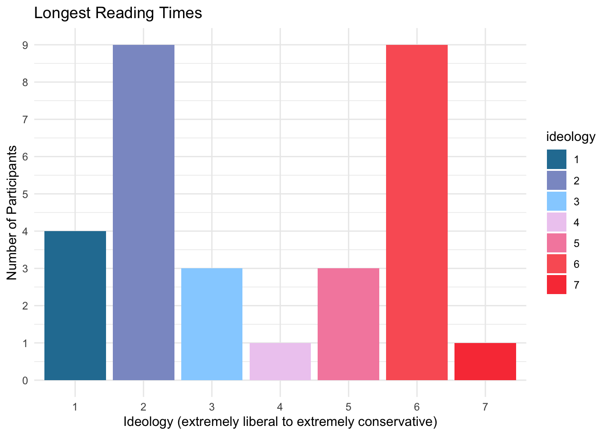

Chapter 5 Interactive component
No analysis can be complete without a review of deviations from the norm. In this case, mean reading times for politically discordant headlines (pro-conservative for Democrats, pro-liberal for Republicans) are normalized across participants to identify individuals that read politically contrasting articles for a longer than average time. In the interactive above, the dashed gray line represents the mean and each red dashed line represents one standard deviation above the mean. No observations fall below one standard deviation of the mean. Each circle is colored according to the participant’s political ideology. Unsurprisingly, it tends to be participants on the extremes of the ideology spectrum, either extremely liberal (score 1-2) or extremely conservative (6-7), that spend the longest time reading headlines that disagree with their political agenda. This is often the very foundation of news, to sensationalize people with headlines that shock them or go against there point of view. This leads them to read articles for longer, discuss them with friends, and often believe the article on face value without doing any further research.
We present here a chart of all participants with reading times greater than or equal to one standard deviation above the mean. These are the points that are at least past the first dashed red line in the interactive above. These participants spent longer than “normal” reading these headlines. Of the 30 participants that met this criteria, 23 were either extremely liberal or extremely conservative. Further, of the 14 participants that had reading times two deviations above the average, 11 were either extremely liberal or extremely conservative. This reinforces the belief that those who are strongly opinionated are more drawn to articles that conflict with their beliefs than someone who is more moderately inclined. 
*Note: A few alternate methodologies were tested for this interactive. Originally, min-max scaling was applied to all discordant reading times, and this value from zero to one was multiplied by the width of the image to determine final circle position. However, the results didn’t look accurate as the majority of points were to the far left of the screen due to a few large outliers in reading time. This is because when applying min-max scaling to the entire data set, the outliers caused the majority of the values to be smashed close to zero. Considering the outliers, the next approach was to have the median considered as the middle of the screen instead. Then, min-max scaling was applied to the lower and upper halves of the data separately, and this 0 to 1 value was then modified such that 0.5 becomes the maximum for the lower half and minimum for the upper half. This was multiplied by the width of the image to get the final circle position. While this still showed the extreme points, it was not as clear to what extent the points were deviations from the norm. This led us to the final methodology of normalizing the values, multiplying this normalized value by the number of pixels selected to represent one deviation, and then adding this number to the center of the screen (half the image width) which represents the mean. This exercise was fun and important because it showed a real example of when outliers cause poor data transformations. Code for the alternate data cleaning can be found here: interactive_prep_median.R